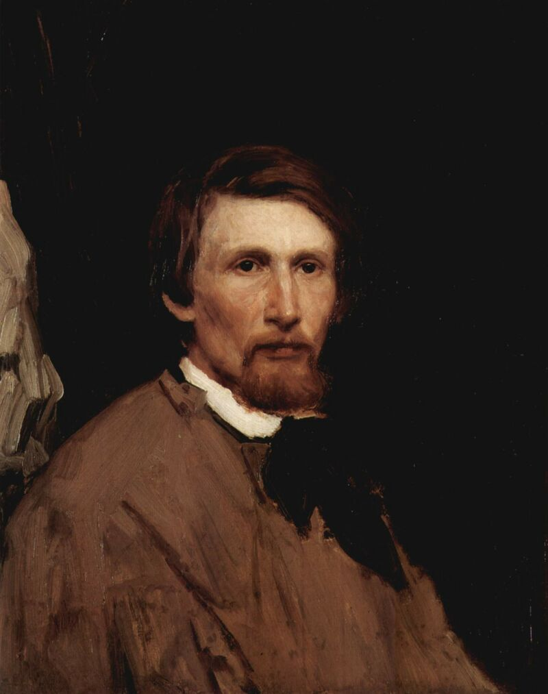

Биография
Виктор Михайлович Васнецов — выдающийся русский художник, живописец и мастер монументального искусства, родился 15 (27) мая 1848 года в небольшом селе Лопьял Вятской губернии в семье священника Михаила Васильевича Васнецова. Детство будущего художника прошло в сельской тишине, среди природы и народных обычаев, которые навсегда остались источником его вдохновения. Отец был образованным человеком, интересовался наукой, литературой и живописью, что оказало большое влияние на развитие сына. Уже с ранних лет Виктор проявлял способности к рисованию, любил изображать людей, животных, деревенскую жизнь и сцены из народных сказок.Когда Виктору исполнилось 10 лет, его отправили учиться в Вятское духовное училище, а затем — в Вятскую духовную семинарию. Хотя его готовили к церковной карьере, юношу больше привлекало искусство. В свободное время он рисовал, создавал иллюстрации и участвовал в оформлении ученических изданий. Позже он признался, что именно в Вятке он впервые осознал, как богата и поэтична жизнь простого народа, и как важно сохранить её в искусстве.Первые успехи пришли в 1870-е годы. Художник создал картины «Военная телеграмма», «Книжная лавка», «С квартиры на квартиру» — произведения, в которых отразилась жизнь простых людей. Эти работы принесли ему признание и поддержку Товарищества передвижных художественных выставок. Но вскоре Васнецов почувствовал, что бытовой жанр сковывает его фантазию. Его всё больше привлекали былины, легенды, древнерусская история и народные сказания, где он видел подлинную поэзию и мудрость народа.В 1876 году Васнецов отправился во Францию, где несколько лет жил в Париже. Там он познакомился с произведениями старых мастеров, изучал композицию, свет и колорит, но европейские сюжеты не увлекали его. Наоборот, вдали от родины он ещё сильнее ощутил духовную связь с Россией и понял, что хочет писать картины о своей земле, о её прошлом, о её сказках и богатырях.Вернувшись в Россию, Васнецов начал создавать произведения, ставшие классикой русской живописи. Среди них — «После побоища Игоря Святославича с половцами», «Аленушка», «Иван-Царевич на Сером волке», «Богатыри», «Ковер-самолет», «Царевна-лягушка». В этих полотнах художник объединил реализм и фантастику, историю и миф. Его герои — не просто персонажи сказок, а живые воплощения русского духа, силы, смелости и красоты. В картинах Васнецова чувствуется глубокое уважение к народу, к его вере, к идеалам добра и справедливости.Важную часть его творчества составляют религиозные и монументальные работы. В 1880–1890-е годы художник принял участие в создании росписей Владимирского собора в Киеве, где расписал сцены из Священного Писания. Эти росписи стали новым словом в русском церковном искусстве — Васнецов сумел соединить традиции древнерусской и византийской иконописи с современным живописным стилем. Позднее он работал над оформлением собора Святого Георгия в Гусь-Хрустальном, участвовал в украшении церкви Спаса на крови в Петербурге.Помимо живописи, Васнецов проявил себя и в архитектуре. Он принимал участие в проектировании Исторического музея в Москве, создав его фасад в стиле древнерусского зодчества, и даже построил себе дом-мастерскую в Москве, который стал образцом национального архитектурного стиля.Последние годы жизни художник провёл в Москве. Несмотря на возраст и болезни, он продолжал работать, писать картины и участвовать в выставках. Васнецов был почитаем современниками как художник, сумевший передать душу России. Он умер 23 июля 1926 года и был похоронен на Ваганьковском кладбище.Виктор Михайлович Васнецов оставил огромное художественное наследие, в котором отразилась история, культура и духовная сила русского народа. Его творчество стало символом национального самосознания, а картины — частью культурного кода России. Васнецов показал, что сказка — это не просто выдумка, а живая память народа, его мечта о справедливости, красоте и добре.